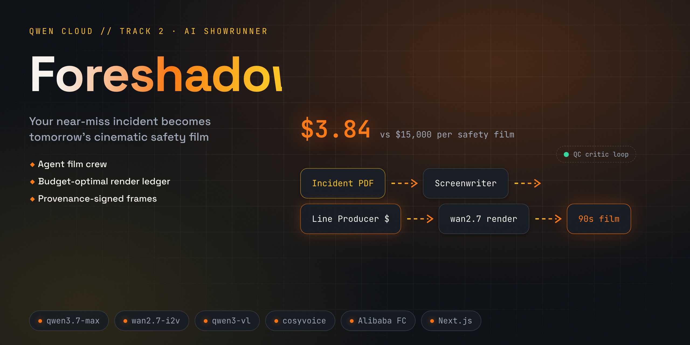

Foreshadow
Your near-miss, tomorrow's safety film.
An agent film crew that turns real incident reports into 90-second cinematic safety films — budgeted, QC'd, provenance-signed.
Edy Cu · foreshadow.edycu.dev
The ledger line
$2.71 vs $15,000
One safety film, made by an agent crew under a hard budget — versus a conventional production quote and a 6–8 week wait. That $2.71 is the real ledger total for forklift@$4, not a slogan.
The problem
Nobody watches the 2009 training video.
A warehouse safety manager files the third forklift near-miss this quarter. Corporate's answer is a stock actor in a stock warehouse. The next one won't be a near-miss.
The solution
Drop in Tuesday's report. Screen it Thursday.
A crew of Qwen agents — Screenwriter, Line Producer, Art Department, DP, QC Critic, Narrator — makes the film from your incident, under a hard dollar budget, and signs the receipts.

How it works
An 11-stage pipeline with a wallet in the middle.
Live demo — real CLI output
Replay, then try to tamper with it.
Key features
The budget is the product.
Line Producer knapsack allocator
Tiers every shot by narrative weight × cost, logs every demotion as priced regret, kill-switch at 2.5× budget.
| budget | hero | film $ | quality |
|---|---|---|---|
| $2 | 1 | $1.32 | 49.8% |
| $4 | 3 | $2.71 | 78.4% |
| $8 | 6 | $3.31 | 92.0% |
forklift sweep · docs/BENCH.md · reproduce: foreshadow bench
Ed25519 + Merkle provenance
Safety films become evidence — every artifact hash rolls into a signed root; invariants I1–I4 are tested, including 1-byte tamper.
Grounded QC loop
A VL critic rejects shots that miss their safety intent — one corrective retry, or demote; rejected clips provably never reach the cut.
Why only Qwen Cloud
Take Qwen out and the demo dies.
Without one platform, this is four vendors, an async render queue, and a cross-vendor cost normalizer — and the single-bill ledger that is the demo becomes impossible.
Track 2 asks for quality under a limited budget. We made the constraint the signature feature.
| Qwen surface | Without it |
|---|---|
qwen3.7-max + thinking | second LLM vendor |
qwen-image-2.0-pro | Midjourney account + style hacks |
wan2.7-i2v / wan2.6-flash | Runway + no cheap tier = no ladder |
qwen3-vl-plus QC | a GPT-V-class vendor just for review |
cosyvoice-v3-plus | an ElevenLabs subscription |
| Batch API −50% | fan-out costs 2× |
Shipped — built solo in six days
Everything claimed is green. Offline.
Honest scope: graded artifact runs on deterministic FakeQwen; live image/video/TTS surfaces are payload-complete behind DASHSCOPE_API_KEY. Function Compute handler written, not yet deployed. It says so in the README.
The ask
Run the replay. Try to break the signature.
Two minutes, zero keys, zero network. If one byte is wrong, it will tell you.
foreshadow.edycu.dev · github.com/edycutjong/foreshadow · Edy Cu